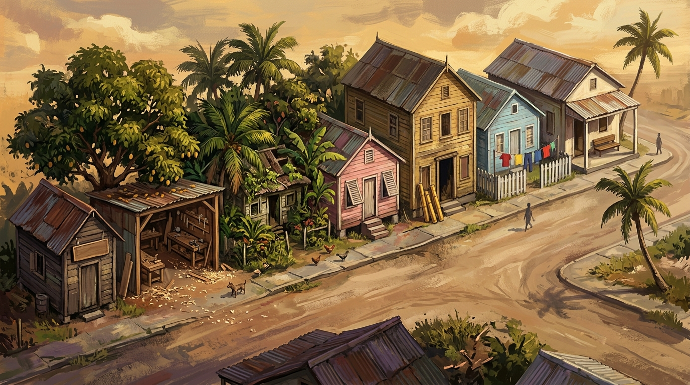

“一个陌生人开车经过米格尔街，只会说一句：‘贫民窟！’因为他看不到更多。可我们这些住在这里的人，看到的是一个世界。”
—— 根据 V.S. 奈保尔《米格尔街》（1959）改编
这些声音会在你观察、倾听和选择时插话。等级越高，它们说得越多，你也越容易通过检定（2d6 + 等级 ≥ 难度）。
你的心力与尊严被彻底击垮了。成人世界的冷酷嘲笑让你窒息，你只想尖叫着跳上运糖船永远逃离特立尼达……
快开启留声机听一段卡里普索旋律，或在脑海中找回尊严！